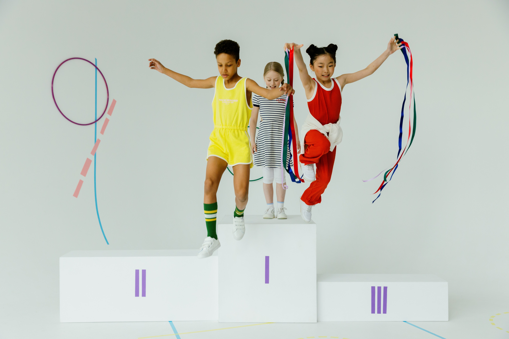
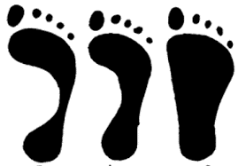

Modelo de selección piramidal
Es un método en que se lleva a cabo en los niveles de formación deportiva (iniciación, formación y especialización) para dar continuidad al proceso de los deportistas teniendo en cuenta su desarrollo. Se da por medio de la observación y evaluación que puedan determinar su desarrollo biológico y motor.
En la disciplina de 100m podemos evaluar de la siguiente forma:
iniciación
Evaluación motora
- Test de velocidad: se puede realizar una prueba simple de velocidad en una distancia corta, como 10 o 20 metros. Cronometrar el tiempo que tarda en correr desde un punto de partida hasta la línea de llegada.
- Test de salto de longitud: Coloca una cinta métrica en el suelo y pedir al niño que realice un salto desde un punto de partida. Mide la distancia que es capaz de saltar.
- Test de lanzamiento de pelota: Utiliza una pelota de tamaño apropiado para la edad del niño y medir la distancia que el niño puede lanzarla.
- Test de equilibrio: Esta prueba evalúa la capacidad de equilibrio del niño. Pedirle al niño que realice diferentes actividades de equilibrio, como caminar en una línea recta o mantener el equilibrio en un solo pie durante un cierto período de tiempo.
Evaluación biológica
Se pueden tomar medidas como:
- Talla
- Peso
- IMC
- Perímetro cefálico (en algunos casos) Estas ayudaran a ver el desarrollo que tenga el niño y sus condiciones físicas que pueden llegar a ser determinantes es su proceso formativo.

Formación
Evaluación motora
- Test de tiempo de reacción: Esta prueba evalúa la capacidad de reacción y salida rápida de los atletas. Utiliza señales visuales o auditivas para simular una salida de carrera y cronometra el tiempo que tardan en reaccionar y comenzar la carrera.
- Test de aceleración: Mide el tiempo que tardan en alcanzar ciertas distancias durante la carrera de 100 metros. Cronometra el tiempo que tardan en alcanzar los 10, 20, 30 o 40 metros. Esto dará una idea de su capacidad de aceleración y velocidad inicial.
- Test de velocidad sostenida: Realiza una prueba de velocidad en una distancia ligeramente más larga, como los 150 metros. Cronometra el tiempo que tardan en completar la distancia y evalúa su capacidad de mantener una velocidad.
- Test de cambio de ritmo: Organiza un circuito en el que tengan que correr a diferentes ritmos en secciones específicas. Pueden correr a un ritmo lento durante 30 metros, luego aumentar la velocidad durante los siguientes 30 metros y finalmente terminar con un sprint rápido en los últimos 40 metros.
- Test de técnica de carrera: Evalúa la técnica de carrera. Pídeles que corran una distancia corta y observa aspectos como la posición del cuerpo, la cadencia de zancada, el ángulo de los brazos y la eficiencia en la zancada. Se puede grabar su carrera en video para analizar posteriormente y proporcionar retroalimentación sobre su técnica.
Evaluación biológica
- Talla
- Peso
- IMC
- Palancas
- % Muscular
- % Graso
- % Óseo
Especialización
Evaluación motora
- Test de partida: Evalúa la técnica de salida de los atletas. Puedes utilizar un sistema de sensores para medir el tiempo de reacción y el tiempo que tardan en alcanzar los primeros 10 metros.
- Test de velocidad máxima: Realiza pruebas de velocidad en distancias más cortas, como 30 o 60 metros, para evaluar la máxima velocidad que los atletas pueden alcanzar.
- Test de velocidad de mantenimiento: Organiza una prueba en la que los atletas corran los primeros 60 metros a máxima velocidad y luego mantengan una velocidad alta durante los últimos 40 metros.
- Test de aceleración: Realiza pruebas en diferentes distancias, como 10, 20 y 30 metros, para evaluar la capacidad de aceleración de los atletas.
- Test de cambios de ritmo: Diseña un circuito con diferentes cambios de ritmo, donde los atletas tengan que acelerar, mantener una velocidad constante y luego acelerar nuevamente.
Evaluación biológica
- Talla
- Peso
- IMC
- Composición corporal
- Somatotipo
- Palancas
- Nivel de fatiga
- Resistencia
Estos son algunos de los muchos test que se pueden realizar en las diferentes etapas, es importante tener en cuenta que cada nivel mostrara diferentes capacidades que se pueden evaluar y diferentes métodos, algunos mas efectivos que otros, lo importante es respetar el desarrollo de la persona evaluada.
Modelo científico procesal
Esta propuesta de selección de talentos deportivos con base científica trata de elegir al mejor prospecto basándose en 3 aspectos: Entrenamiento, competición o actuación y factores ambientales. En este modelo, se busca que todo lo que se vaya a evaluar del sujeto o deportista tenga alguna base científica, las pruebas que se quieran realizar deberían ser de laboratorio y tener un patrón de referencia.
Para evaluar el componente del entrenamiento:
Se sugiere valorar el modelo de entrenamiento que se está llevando a cabo y la planificación empleada, desde el macrociclo, hasta cada una de las sesiones y los componentes de las cargas de cada sesión El componente de competición o actuación valora los factores que trae el deportista desde el entrenamiento, los cuales son: técnico, táctico, psicológico, fisiológico, nutricional entre otros. Es recomendable realizar pruebas gold standard para observar estos aspectos. Por último, en los factores ambientales, es necesario de un equipo multidisciplinar para estimar factores psicológicos, familiares, hábitos, salud o comportamiento social.
Test gold standard para evaluar el componente de competición en los 100m de atletismo:
- Dinamometría isocinética (Fuerza)
- Test de Vo2 máximo (Resistencia)
- Test de velocidad (Velocidad, utiliza células fotoeléctricas)
- Electrogoniometro (Flexibilidad)

Modelo científico selectivo o de performance
A partir de esta propuesta, se busca evaluar a los deportistas a través de los procesos evolutivos del ser humano desde la parte técnica, táctica condicional, coordinativa, etc. Se debe tener en cuenta las edades de los sujetos para estimar una estructuración de progresión y además es de suma importancia el conocimiento de las fases sensibles.
Otro de los puntos clave, es el concepto de ontogénesis motora, el cual, enmarca cual debería ser el desarrollo físico de una persona dependiendo de su edad cronológica.
Según Martín (1982) ciertas capacidades condicionales y coordinativas tienen mejor adaptación en determinadas edades como se muestra a continuación:

Por ejemplo, en la prueba de atletismo de 100m, en el modelo selectivo o de performance, es de gran importancia observar el desempeño que tendrá el deportista en ritmo, velocidad y flexibilidad en edades tempranas.
Modelo cuántico de selección de talentos deportivos
En los últimos años se han venido estructurando distintas maneras de poder elegir deportistas para ciertas disciplinas deportivas según su patrón genético. Desde esta perspectiva, surge la dermatoglifia como una ciencia encargada de analizar el talento deportivo que pueden poseer los individuos desde su nacimiento y luego de ello, se pueden perfilar para un deporte.
Existen dos maneras de realizar este proceso, guiados por una huella plantar y otra dactilar.
Desde la manera plantar, se busca realizar una correlación entre el estado anatómico del pie o tobillo y los procesos de entrenamiento que se puedan llegar a realizar. De este modo, este estudio busca perfilar a un deportista a un deporte dependiendo del arco plantar que su huella marque. A esta huella, podemos realizar un fotopodograma analizando medidas de ancho y largo, para que así se pueda calcular el % de arco plantar que se tiene y saber para que deporte puede tener un mejor rendimiento.
Interpretación:
- Pie cavo: Predominancia de músculos propulsores, deportes de velocidad, aceleración y potencia. (Pruebas cortas de atletismo o natación)
- Pie normal: Buena relación entre músculos propulsores y efectores, deportes acíclicos y de velocidad gestual. (Fútbol, baloncesto, voleibol)
- Pie plano: Hiperlaxitud y bajo nivel de musculatura, deportes de resistencia y fondo (Maratón, triatlón, entre otros)
Otra de las maneras para perfilar a un individuo a cierto deporte es por medio de las huellas dactilares, en este proceso, se trata de ubicar que fortalezas puede poseer una persona en un futuro analizando la forma de sus huellas y lo que científicamente se ha encontrado que pueden poseer en un futuro.
Hay que reconocer en primera instancia, la composición de las huellas:

Para este estudio se deben observar la cantidad de deltas que pueda tener un sujeto en cada una de sus huellas. Los deltas se identifican como “triángulos” formados en las huellas provenientes de 3 líneas de diferente dirección y se pueden ubicar en cualquier parte del purplejo.
- Si un sujeto no tiene deltas en una huella, se procede llamará a ese dedo: Arco (A)
- Si tiene un delta en una huella, se llamará: Presilha (L)
- Cuando tiene dos deltas en el mismo dedo, se llamará: Verticilo (W)
Luego de haber localizado todos los deltas, se procederá a hallar el Delta 10, lo cual viene a demarcar el perfil que puede tener el individuo. El Delta 10 se calcula de la siguiente manera:
- Delta 10 = Sumatoria de Presilhas (L) + (2*Sumatoria de verticilos)
En el siguiente estudio, se puede observar la plasmación de las 10 huellas de un sujeto y la cantidad de deltas que posee.

Al analizar a este sujeto se puede observar lo siguiente:
- # De deltas : 6
- # De arcos: 4
- # De Presilhas (L): 6
- # De Verticilos (W): 0
Con los datos recolectados se puede calcular el delta 10:
Delta 10 = Sumatoria de Presilhas (L) → 6 + (2 * Sumatoria de Verticilos (W) → 0)
Delta 10 = 6
Teniendo calculado el delta 10 se buscará clasificar al deportista en una rama o disciplina deportiva, para lo cual, se utiliza la siguiente tabla como referencia:
| Delta 10 menor de 10 | Predominio de la fuerza máxima |
|---|---|
| Delta 10 entre 10 y 15 | Predominio de la velocidad y potencia |
| Delta 10 entre 15 y 20 | Predominio de la resistencia y la coordinación |
En el caso de nuestro deportista se puede determinar que tiene una marcación hacia deportes de fuerza máxima, mayor presencia de fibras rápidas y disciplinas de ruta anaeróbica aláctica.